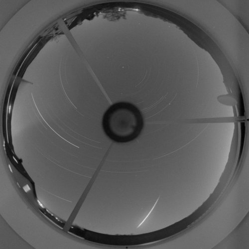

Le météore de Neushwanstein, tel qu'enregistré par une station de détection (en bas à droite)

À Neuschwanstein (Bavière,
Allemagne/Autriche), 2 flashs lumineux successifs illuminent le ciel, quelques mn après 5
détonations assourdies se font entendre. Le phénomène est observé en Allemagne, Autriche et même en France. Le
phénomène tombe dans la zone des stations d'observations systématiques d'European Network, saisie sur
le vif par 7 stations photo, 3 stations radio, 2 stations infrason et des sismographes. Le météore a la
mêêite que la météorite de Pribram tombé le 1959-04-07. Pour la première fois, on semble mettre en évidence
un courant astéroïdal.
En Bourgogne, plusieurs témoins indépandants répartis
dans plusieurs départements observent la chute très rapide d'une boule de feu qui ne fait aucun bruit. Tous les
témoins indiquent que l'observation a eu lieu vers l'est. Ce phénomène est également signalé par des témoins en
Bavière L'hypothèse retenue est celle d'une rentrée atmosphériqueSEPRA: PAN classé B.